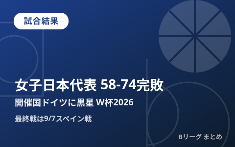

女子日本代表、開催国ドイツに58-74で完敗 W杯2026は1勝1敗で最終戦スペインへ

ドイツ・ベルリンで開催中の「FIBA女子バスケットボールワールドカップ2026」で、女子日本代表は日本時間9月5日深夜（現地時間5日）に開催国ドイツ代表と対戦し58-74で敗れました。初戦マリ戦で大会新記録となる3ポイント20本成功を叩き出した長距離砲がこの日は27本中3本と沈黙し、開催国の勢いを止められませんでした。グループAは1勝1敗で並ぶチームが並び、突破の行方は9月7日深夜のスペイン戦に持ち越されます。
試合の流れ 立ち上がりの11-28が響く
日本は第1クォーターから体格で勝るドイツにインサイドを攻略され、11-28と大きく離される苦しい立ち上がりとなりました。第2クォーターで反撃し、29-34まで差を詰めて前半を終えましたが、後半に入るとドイツが再びペースを握り、最終スコアは58-74。序盤のビハインドを最後まで覆すことができませんでした。
好調だった3ポイントが一転して不発に
日本はこの試合、生命線とする3ポイントシュートが27本中3本成功（成功率11%）にとどまりました。前日のマリ戦では3ポイント20本成功という大会新記録をマークしていただけに落差が大きく、試合後には指揮官が「相手がフィジカルで押してきてシュートを打たせてもらえなかった」という趣旨のコメントを残しています。個人では田中が15得点と最多を記録し、髙田が9得点、今野と山本がそれぞれ8得点で続きました。
グループAは大混戦 初戦はマリに102-97で勝利
女子日本代表が入るグループAは、日本・開催国ドイツ・スペイン・マリの4カ国。9月4日の初戦ではマリ相手に102-97の点の取り合いを制して白星スタートを切りましたが、続くドイツ戦を落としたことで、グループ内の4チームが軒並み1勝1敗で並ぶ大混戦となりました。
| 日程（日本時間） | 対戦カード | 結果 |
|---|---|---|
| 9月4日 | 日本 vs マリ | ◯ 102-97 |
| 9月5日深夜 | 日本 vs ドイツ（開催国） | ● 58-74 |
| 9月7日深夜 | 日本 vs スペイン | 予定 |
最終戦スペイン戦が突破の行方を左右
グループAの最終戦は日本時間9月7日（月）24:50キックオフの予定で、相手はFIBAランキング上位に位置するスペイン代表です。決勝トーナメント進出には上位2チームに入る必要があり、1勝1敗で並ぶグループ内順位はこの最終戦の結果次第で大きく変わります。地上波フジテレビ・CS放送・FOD・DAZNなどでの放送・配信が予定されています。
Q. 負けたら決勝トーナメント進出は無くなる？
A. まだ可能性は残っています。グループAは4チームが1勝1敗で並んでおり、9月7日のスペイン戦の結果と得失点差などの順位規定次第で突破の可能性があります。最新の順位はFIBA公式サイトでご確認ください。
出典：Yahoo!ニュース（BASKET COUNT）「女子日本代表に悪夢、3ポイントシュート成功がまさかの3本に終わりドイツ代表に16点差の完敗」／Yahoo!ニュース（サンケイスポーツ）「日本はドイツに完敗 指揮官『相手がフィジカルで押してきてシュートを打てなかった』」／バスケットボール協会公式「FIBA女子バスケットボールワールドカップ2026 予選第1戦 結果」ほか
https://news.yahoo.co.jp/articles/8c77e0e19229a0b7ed04477ddef9bfbae1c07ee2
https://news.yahoo.co.jp/articles/ccb30bac0746ba7f1d8f93a7fac4d7b26f381746
https://www.japanbasketball.jp/japan/89477